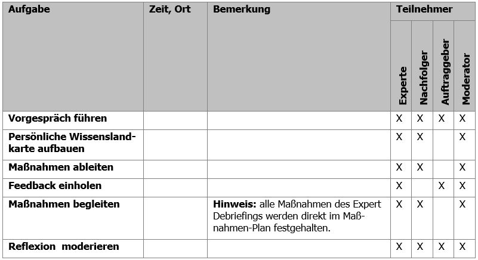
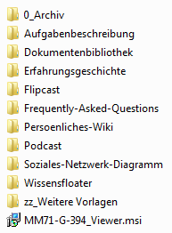

Grundlagen
Viele Organisationen sehen sich beim Eintritt ins 21. Jahrhundert mit einer ganz besonderen Situation konfrontiert. Durch die Megatrends Globalisierung und Vernetzung sehen sie sich einem bisher nicht da gewesenen Wettbewerbsdruck gegenübergestellt. Auch der Charakter der Arbeit hat sich geändert. Stellten in 1930 die manuellen Routinearbeiter noch ca. 80% der Belegschaft, so dominiert heute die Gruppe der Wissensarbeiter. Gleichzeitig führen der demografische Wandel (die Gesellschaft altert) und der Fachkräftemangel (nicht genug junge Fachkräfte kommen nach) dazu, dass die Wissensbewahrung und die Steigerung der Produktivität von Wissensarbeitern (dazu zählen auch die Führungskräfte) eines der dringlichsten Themen in vielen Organisationen ist.
Die Cogneon Methode Expert Debriefing dient dazu, das Wissen eines ausscheidenden oder wechselnden Experten der Organisation zu bewahren sowie dem Experten Wertschätzung für seine Leistungen zuteilwerden zu lassen. Um diesen Prozess systematisch zu gestalten, wird ein Expert Debriefing von einem ausgebildeten Moderator begleitet. Um systematisch alle für die Organisation relevanten Wissensgebiete in einem Expert Debriefing abzudecken, basiert der Prozess auf dem Cogneon Management-Modell für Lernende Organisationen. Die Expert Debriefing Methode sieht deswegen z.B. auch vor, Einstiegspunkt in einen Ansatz des systematischen persönlichen Wissensmanagements zu sein, der in die Weiterbildungsprogramme aufgenommen werden kann, und sich als Methode somit langfristig überflüssig zu machen.
Expert Debriefings können sowohl bei Fachkräften (Fachexperten) als auch bei Führungskräften (Führungsexperten) und in allen funktionalen Bereichen (Marketing, Vertrieb, Entwicklung, Produktion, Service) durchgeführt werden. Der Begriff des Experten ist hierbei immer relativ in Beziehung zu einer Bezugsgruppe (den Laien) zu verstehen. Ein Werkstudent, der eine Aufgabe übernommen und alleiniger Wissensträger zu einem Thema ist, kann durchaus als Experte in einer Abteilung gelten, mit dem sich ein Expert Debriefing durchzuführen lohnt.
Da jeder Experte, sein Wissen und seine Affinität zu Werkzeugen der Wissensbewahrung unterschiedlich sind, kann es keinen „One-Size-Fits-All-Ansatz“ geben. Der Cogneon Expert Debriefing Referenzprozess ist deshalb so aufgebaut, dass zunächst in einer persönlichen Wissenslandkarte des Experten Überblick über alle möglichen Wissensgebiete aufgebaut und dann auf Basis einer vollständigen Übersicht die wichtigsten Maßnahmen ausgewählt werden. Zur Auswahl der Maßnahmen steht der Cogneon Werkzeugkasten Wissensbewahrung bereit, der Standard-Werkzeuge (für alle Moderatoren) und Werkzeuge für erfahrenere Moderatoren oder Moderatoren mit besonderen Anforderungen enthält.
Dieser Leitfaden ist für Expert Debriefing Moderatoren (im folgenden „Moderator“ genannt) gedacht. Selbstverständlich sind hiermit auch Moderatorinnen gemeint. Er enthält die Prozessbeschreibung (Kapitel 2) mit den einzelnen Aufgaben des Moderators, sowie die Übersicht des Werkzeugkastens Expert Debriefing (Kapitel 3) mit einzelnen Werkzeugen zur Wissensbewahrung.
Der Referenzprozess in der Übersicht

Der Prozess beinhalte folgende Aufgaben für den Moderator:
- Vorgespräch führen: Das Vorgespräch dient dazu, dem Auftraggeber und dem Experten den Zweck, die Vorgehensweise und die Ergebnisse eines Expert Debriefings aufzuzeigen, von den Beteiligten einen Überblick über die Situation und die Rahmenbedingungen zu erhalten, durch den Auftraggeber den Fokus für das Expert Debriefing festlegen zu lassen und die weiteren konkreten Schritte zu planen.
- Persönliche Wissenslandkarte aufbauen: Die persönliche Wissenslandkarte dient dazu, einen systematischen und vollständigen Überblick über das gesamte in Bezug auf eine Stelle relevante Wissen herzustellen. Die persönliche Wissenslandkarte kann somit als Wissenslandkarte einer Stelle betrachtet werden. Die persönliche Wissenslandkarte beinhaltet im Gegensatz zu einer Mind Map eine vorstrukturierte erste Ebene (Arbeitshistorie, Aufgaben und Wissensgebiete), um systematisch das Gedächtnis und damit das implizite Wissen des Experten zu aktivieren (Episoden-, prozedurales und deklaratives Gedächtnis).
- Maßnahmen ableiten: Die Ableitung des Maßnahmen-Plans dient dazu, geeignete Maßnahmen zur Wissensbewahrung zu identifizieren, sie sowohl durch Experten als auch durch den Nachfolger priorisieren zu lassen und anschließend alle Maßnahmen zu terminieren.
- Feedback einholen: Das Einholen des Feedbacks dient dazu, einen möglichst objektiven Überblick über die notwendigen Maßnahmen zur Wissensbewahrung zu erhalten und dem Auftraggeber die Möglichkeit zu geben, in den Maßnahmen-Plan korrigierend einzugreifen.
- Maßnahmen begleiten: Die Durchführung der im Maßnahmen-Plan festgelegten Maßnahmen ist der Kern des Expert Debriefings und dient der Wissensbewahrung durch Wissensidentifikation, Wissensdokumentation oder Wissenskooperation. Ziel ist, dass Experte und Nachfolger möglichst viele Maßnahmen in Eigenregie und in ihren Arbeitsalltag integriert durchführen. Der Moderator hat hier zwei Rollen: 1. Projektleiter: er wacht darüber, dass die im Maßnahmen-Plan festgelegten Maßnahmen durchgeführt werden. 2. Unterstützer: in 1:NN-Szenarien (Nachfolger noch nicht bekannt) oder bei komplexeren Maßnahmen unterstützt der Moderator begleiten bei konkreten Maßnahmen.
- Reflexion moderieren: Die Reflexion dient der Umsetzungskontrolle sowie der kontinuierlichen Verbesserung der Methode Expert Debriefing. Darüber hinaus sollen Verbesserungspotentiale in der Organisation identifiziert werden, die den Einsatz der Methode Expert Debriefing langfristig überflüssig machen können.
Erfolgsfaktoren für die Durchführung
Die Methode Expert Debriefing wurde von Cogneon 1999 entwickelt. Damit kann auf eine lange Zeitperiode zurückgeblickt werden, in der die Methode in unterschiedlichen Branchen und in unterschiedlichen Unternehmensgrößen zum Einsatz kam. Die gesammelten Erfahrungen wurden dazu genutzt, das Expert Debriefing stetig weiterzuentwickeln. Gleichzeitig wurden von Cogneon, als auch von anderen Anwendern der Methode Erfolgsfaktoren identifiziert, die im Folgenden aufgeführt sind.
- Die Teilnahme am Expert Debriefing ist freiwillig: die ausdrückliche Bereitschaft des Experten sein Wissen zu teilen ist existenziell. Die Motivation des Experten, dies zu tun, ist von der Ausgangsbasis für die Durchführung des Expert Debriefings abhängig. Gehen Experten in den Ruhe stand oder liegt eine Eigenkündigung des Experten vor und er ist dem Unternehmen wohlgesonnen (z.B. wenn der Experte aus privaten Gründen umzieht) ist eine hohe Motivation vorhanden. Wird unternehmensseitig eine Kündigung ausgesprochen, z.B. im Rahmen von Umstrukturierungsmaßnahmen, kann das Expert Debriefing in die Aufhebungs- oder Sozialverhandlungen mit eingebunden werden. Bei zerrütteten Arbeitsverhältnissen und deren Beendigung ist hingegen kaum noch eine Motivation vorhanden.
- Vorgesetzte stehen hinter dem Prozess, lassen aber Freiräume zu: der Vorgesetzte verantworte die Ressourcen (Zeit des Experten/ ggf. der Nachfolger, Budget, Ort) für die Prozessdurchführung und ist maßgeblich an der Festlegung der Zielinhalte beteiligt. Das Commitment des Vorgesetzten ist daher notwendig, damit die Transfermaßnahmen im Prozessverlauf reibungslos umgesetzt werden können. Sind Auftraggeber und Vorgesetzte nicht identisch, so sind beide in den Prozess zu involvieren. Unstimmigkeiten sind von den beiden Parteien direkt zu klären. Die Erhebung der persönlichen Wissenslandkarte sollte ohne den Vorgesetzten erfolgen, da der Experte dann i.d.R. offener agiert (gerade im Bereich der Lessons Learned)
- Transparenz schaffen und Erwartungshaltungen der Beteiligten abholen: Transparenz (Warum das Expert Debriefing erfolgt, Was sind die Inhalte und was passiert mit den Ergebnissen) im Vorfeld erzeugen. Der Abstrakte Prozess kann durch Fallbeispiele konkretisiert werden. Ein Vorgespräch mit Auftraggeber und/oder Vorgesetzen, sowie Experten und falls vorhanden dem Nachfolger nimmt Erwartungen auf, klärt auf und nimmt dadurch Ängste.
- Den Prozess professionell und auf Augenhöhe moderieren: respektvoller und Vertrauensvoller Umgang zwischen Moderator, Experten und Nachfolger ermöglichen das Erheben eines breiten Wissensspektrums und das erschließen „impliziten“ Wissens. Explizites Wissen sollte explizit übergeben werden (Vorhandene Dokumentationen). Implizites Wissen sollte externalisiert werden (z.B. durch Erfahrungsgeschichten und Podcasts). Der Moderator sollte dabei eine gewisse Augenhöhe zum Experten haben, d.h. das Begrifflichkeiten bekannt sind. Dazu muss sich der Moderator ggf. im Vorfeld in die Thematik einlesen.
- Den Experten durch Wertschätzung motivieren: eine Wertschätzung des Experten ist ein hoher Motivationsfaktor für die Bereitschaft, Wissen freizugeben.
- Den Prozess durch den Moderator strukturieren und kontrollieren: das Aufsetzen des Prozesses mit Vorgespräch, persönlicher Wissenslandkarte und Ableitung eines Maßnahmenplans durch den Moderator gibt die Notwendige Struktur. Die Umsetzung des Maßnahmenplans durch das Transfertandem sollte über regelmäßigen Reviews „kontrolliert“ werden. Der Moderator hat hierbei keine inhaltliche Verantwortung, ist aber für die Prozessabwicklung verantwortlich. Werden Maßnahmen nicht termingerecht umgesetzt, muss er intervenieren und ggf. an den Vorgesetzten eskalieren.
Die Cogneon Methode Expert Debriefing
Hinweis: die unter Eingaben aufgeführten Dokumente und Vorlagen befinden sich in der Projektvorlage Expert Debriefing (0_Projektvorlage-Expert-Debriefing). Alle Projektergebnisse kommen in das Verzeichnis Projektergebnisse.
Vorgespräch führen
Zweck
Das Vorgespräch dient dazu, dem Auftraggeber, dem Experten und dem Nachfolger, sofern schon vorhanden, den Zweck, die Vorgehensweise und die Ergebnisse eines Expert Debriefings aufzuzeigen. Der Moderator erhält von den Beteiligten einen Überblick über die Situation und die Rahmenbedingungen, lässt durch den Auftraggeber den Fokus für das Expert Debriefing festlegen und plant die weiteren konkreten Schritte.
Damit dient das Vorgespräch auch als Auftragsklärung, d.h. der gesamte Rahmen des Expert Debriefings für Inhalt, Zeitraum (Dauer) und Aufwand (Verfügbarkeit des Experten in dem Zeitraum) wird vereinbart. Besonders wichtig ist hier das Commitment zwischen Auftraggeber (Vorgesetzter) und Experten. Sollten im Prozessverlauf Schwierigkeiten auftreten (z.B. keine Zeit für die Durchführung von Wissensbewahrungsmethoden), kann auf diese "Vereinbarung" zurückgegriffen werden. (In einigen Unternehmen unterschreiben die Beteiligten das Protokoll, womit eine stärkere Bindung erzielt wird.).
Hinweis: es wird davon ausgegangen, dass Auftraggeber und Vorgesetzter identisch sind. Ist das nicht der Fall, sollte der Personenkreis erweitert werden.
Eingaben (Input)
- Präsentation Expert Debriefing
- Vorlage Protokoll Vorgespräch
- Vorlage Projektplan

Vorgehensweise
Hinweis: das Vorgespräch dauert ca. 2 Stunden.
- Vorstellungsrunde mit Klärung der Rollen.
- Präsentation Expert Debriefing verwenden, um Vorgehensweise zu erläutern. Offene Fragen beantworten.
- Situation und Rahmenbedingungen erfragen, Entscheidungen treffen und im Protokoll Vorgespräch festhalten.
- Termine für Aufbau persönliche Wissenslandkarte, Ableitung Maßnahmen-Plan, Feedback, evtl. Begleitung der Maßnahmen sowie die Reflexion vereinbaren und im Projektplan festhalten.
- Protokoll an Teilnehmer des Vorgesprächs verschicken.
Ressourcen und Hilfsmittel
- -
Ergebnisse (Output)
- Protokoll Vorgespräch
- Projektplan
Tipps und Tricks
- Beamer für Präsentation und Protokoll nutzen
- Ggf. erst mit dem Vorgesetzten alleine sprechen (Fokus des Debriefings) und dann gemeinsam
- Der Auftraggeber muss nicht der Vorgesetzte sein. Wichtig ist hier die Involvierung und das Commitment des Vorgesetzten, da dieser später die Umsetzung ermöglichen muss.
Exkurs: Fragetechniken
Der Aufbau einer persönlichen Wissenslandkarte erfolgt als Dialog zwischen dem Moderator und dem Experten (ggf. ist auch der Nachfolger anwesend).
Als Moderator setzen Sie Fragetechniken ein. Das Ziel der angewandten Fragetechnik ist es, den Dialog zu beginnen bzw. zu vertiefen und den Gesprächspartner dabei rhetorisch zu lenken. (Wichtig: Lenken und nicht manipulieren!)
Die Fragetechniken können klassifiziert werden, z.B. nach
- Offene Fragen
- Geschlossene Fragen
- Reflektierende Fragen
- Hypothetische Fragen
Im Expert Debriefing kommen immer Mischformen vor. Hinter den Beispielen sind die Anwendungsbereiche im Prozess aufgeführt (pWLK = Persönliche Wissenslandkarte allgemein/ SND = Soziales Netzwerkdiagramm)
Offene Fragen: * Was haben Sie vorher alles gemacht? (Arbeitshistorie) * In welchen Rollen sind sie unterwegs? ( Aufgaben) * Was waren Ihre Aufgaben? (Aufgaben/ Arbeitshistorie) * Welche Ansprechpartner hatten Sie? (pWLK/SND) * Woran machen Sie das fest? (Aufgaben) * Wer kann dazu noch etwas sagen/ beitragen? (pWLK/SND) * Wie würden Sie das formulieren? (pWLK/SND)
Geschlossene Fragen: * Wie lange wollen wir in der Arbeitshistorie zurückgehen? (Arbeitshistorie) * Wo ist das eingeflossen? (Frage nach der Dokumentation) * Ist „A“ wichtiger als „B“? – (Priorisierung der Aufgaben) * Ist das so korrekt aufgenommen? – (Erstellung der pWLK)
Reflektierende Fragen: * Habe ich das richtig verstanden, dass … (pWLK/ Podcast)
Hypothetische Fragen: * Was ist das schlimmste, was ihrem Nachfolger passieren könnte? * Was kann in den ersten 3 (6/ 9) Monaten nach ihrem Weggang passieren? * Wenn Sie noch 3 Monate länger bleiben würden, was würden Sie dann machen? * Welche Ideen haben Sie, die noch nicht umgesetzt wurden? * Wenn Sie etwas ändern könnten, was wäre es?
Persönliche Wissenslandkarte aufbauen
Zweck
Die Persönliche Wissenslandkarte dient dazu, einen systematischen und vollständigen Überblick über das gesamte in Bezug auf eine Stelle relevante Wissen herzustellen. Die persönliche Wissenslandkarte kann somit als Wissenslandkarte einer Person und ihrer Stelle betrachtet werden. Die persönliche Wissenslandkarte beinhaltet im Gegensatz zu einer Mind Map eine vorstrukturierte erste Ebene, um systematisch das Gedächtnis und damit das implizite Wissen des Experten zu aktivieren:
- Arbeitshistorie: Episodengedächtnis, Aufhänger für Geschichten zu große Erfolgen und großen Katastrophen in der Vergangenheit.
- Aufgaben (und Rollen): prozedurales Gedächtnis, mit dem Wissen über organisationale Prozesse.
- Wissensgebiete: deklaratives Gedächtnis, welches das benötigte Wissen beinhaltet.
Alle drei Bereiche können Ausgangspunkte für die Ableitung des Maßnahmen-Plans beinhalten.
Eingaben (Input)
- Vorlage persönliche Wissenslandkarte (FreeMind oder MindManager, deutsch oder englisch)
- Protokoll Vorgespräch

Vorgehensweise
Hinweis: der Aufbau der persönlichen Wissenslandkarte dauert ca. 3-4 Stunden.
Im Termin:
Arbeitshistorie in der Persönlichen Wissenslandkarte im Bereich „Arbeitshistorie“ erheben
Hinweis: für die Erarbeitung der Arbeitshistorie kann zur „Auflockerung“ auch eine Lebenslinie verwendet werden (s.a. Kühl, Strodtholz: Methoden der Organisationsforschung. S. 295ff.).
- In welchem Zeitraum könnte sich für den Nachfolger relevantes Wissen verbergen (z.B. Zeit beim aktuellen Arbeitgeber, 10 Jahre)?
- Welche groben Phasen gab es in diesem Zeitraum (Zeitraum jeweils in Klammern angeben, z.B. „Firma xy (1987-1993)“)?
- Welche Aufgabenschwerpunkte und Ereignisse (positive und negative) gab es in den einzelnen Phasen?
- [optional] Welche wichtigen Geschichten ranken sich rund um die Arbeitshistorie (Erfolge, Katastrophen, Lustiges, Peinliches etc.)?
Aufgaben in der persönlichen Wissenslandkarte im Bereich „Aufgaben“ erheben
- Lassen sich die Aufgaben Ihrer Stelle sinnvoll in einzelne Rollen (z.B. Projektleiter, Vorgesetzter) gruppieren?
- Welche Aufgaben haben Sie je Rolle? Hinweis: Format „Objekt + Verb“ (z.B. „Schulung durchführen“). Hinweis: wichtige Ansprechpartner, Dokumente, Tipps & Tricks können gleich mit erhoben werden.
- Wie hoch ist aus Ihrer Sicht die Priorität jeder einzelnen Aufgabe Hinweis: 1=muss, 2=kann, 3=sollte erledigt werden
- Prüfen der Vollständigkeit mit hypothetischen Fragen, z.B. "Was könnte in den ersten 3 Monaten nach ihrem Ausscheiden gegen die Wand laufen?", "Was wäre das schlimmste, was ihrem Nachfolger passieren könnte?
Wissensgebiete, die für die Ausführung der Aufgaben benötigt werden, in der persönlichen Wissenslandkarte im Bereich „Wissensgebiete“ erheben
- Aus den Aufgaben: Welche Wissensgebiete sind für die Ausführung Ihrer Aufgaben wichtig? Hinweis: Wissensgebiete in Lemma-Form (Grundwort, Singular) formulieren. Als Hilfe kann man dem Experten sagen, die Formulierung soll sein, wie bei einem HochschulLehrstuhl (z.B. aus Lehrstuhl für Werkstoffwissenschaften wird das Wissensgebiet Werkstoffwissenschaften). Hinweis: Strukturierungstiefe max. 3 Ebenen, 5±2 Einträge pro Ebene. Hinweis: wichtige Ansprechpartner, Dokumente, Tipps & Tricks können gleich mit erhoben werden.
- In welchen Wissensgebieten sind Sie Experte? Zu welchen Wissensgebieten haben Sie viel Erfahrung?
- Zu welchen Wissensgebieten werden Ihnen von anderen Personen häufig Fragen gestellt?
- Wissensgebiete strukturieren. Hinweis: analog zum Aufbau von Wissenslandkarten gilt als Daumenregel: max. 3 Ebenen, 5±2 Einträge je Ebene.
- Wie hoch ist aus Ihrer Sicht die Priorität jedes einzelnen Wissensgebiets Hinweis: 1=sehr wichtig, 2=wichtig, 3=weniger wichtig
- [optional] Wissensquellen (Personen, Daten) zu den Wissensgebieten eintragen.
Nach dem Termin:
- Persönliche Wissenslandkarte überarbeiten (Rechtschreibung korrigieren, Sortierung der Zweige anpassen: nach Priorität, dann nach Alphabet, Farbcodes anpassen, Struktur bereinigen)
- [optional] Inhalte aus Arbeitshistorie, Aufgaben und Wissensgebiete in persönliches Wiki übertragen
- [optional] Persönliche Wissenslandkarte als PDF erstellen, da Mind Map Tools nicht immer verfügbar sind
- Persönliche Wissenslandkarte (und persönliches Wiki) an Experten schicken (CC-Liste aus dem Vorgespräch verwenden)
Ressourcen und Hilfsmittel
- Nückles, Gurlitt, Papst: Mind Maps and Concept Maps. Visualisieren, Organisieren, Kommunizieren. DTV 2004.
- FreeMind (http://freemind.sourceforge.net/): kostenlose Software zur Erstellung von Mind Maps
- MindManager (http://www.mindjet.de): kommerzielle Software zur Erstellung von Mind Maps
- Cute PDF Writer (http://www.cutepdf.com): kostenlose Software zur Erstellung von PDFs
- Adobe PDF (http://www.adobe.com): kommerzielle Software zur Erstellung von PDFs
Ergebnisse (Output)
- Priorisierte persönliche Wissenslandkarte des Experten (Dokument-Verantwortlicher: Experte)
Tipps und Tricks
- Die Aufgaben sollten aus Gründen der Übersichtlichkeit in einer flachen und nicht in einer hierarchischen Liste dokumentiert werden.
- Häufig fallen dem Experten in den einzelnen Bereichen schon Maßnahmen ein, z.B. „da muss ich noch einen Projektbericht erstellen“. Die Maßnahmen entsprechend der Legende aufnehmen, so dass sie für sich aussagekräftig sind, z.B. „Bericht für Projekt XY fertigstellen“. Mit dem Mind Manager können über den Power Filter die Maßnahmen dann selektiert werden und per Copy & Paste in den Maßnahmenplan überführt werden.
Maßnahmen ableiten
Zweck
Die Ableitung des Maßnahmen-Plans dient dazu, geeignete Maßnahmen zur Wissensbewahrung zu identifizieren, sie sowohl durch Experten als auch durch den Nachfolger priorisieren zu lassen und anschließend alle Maßnahmen zu terminieren. Damit wird ersichtlich, welche Maßnahmen ggf. nicht mehr in das zur Verfügung stehende Zeitfenster passen. Es können dann frühzeitig Themen delegiert werden.
Eingaben (Input)
- Persönlichen Wissenslandkarte des Experten
- Übersicht Werkzeugkasten Expert Debriefing
- Vorlage Maßnahmen-Plan

Vorgehensweise
Hinweis: die Ableitung des Maßnahmen-Plans dauert ca. 3 Stunden.
- Übersicht Werkzeugkasten Expert Debriefing verteilen und einzelne Werkzeuge erklären.
- Übernahme der bereits identifizierten Maßnahmen aus der persönlichen Wissenslandkarte.
- Bereiche „Arbeitshistorie“, „Aufgaben“ und „Wissensgebiete“ in der persönlichen Wissenslandkarte noch einmal durchgehen und überlegen, ob sich weitere Lernziele und konkrete Maßnahmen für den Maßnahmen-Plan ableiten lassen. Diese Lernziele und Maßnahmen ebenfalls in den Maß- nahmen-Plan eintragen.
- Je Maßnahme die (geschätzte) Dauer und die Beteiligten in den Maßnahmenplan eintragen
- Maßnahmen im Maßnahmen-Plan durch den Experten und Nachfolger priorisieren lassen. Den Maßnahmen-Plan nach Priorisierung sortieren.
- Prüfen, ob der ermittelte Aufwand durch den freigegebenen Aufwand aus dem Vorgespräch gedeckt ist (ggf. abgestuft nach Prioritäten).
- Nach dem Feedbackgespräch mit dem Vorgesetzten werden alle Maßnahmen terminiert. Eingetragen wird das Datum, zu dem die Maßnahme fertiggestellt sein soll. Den Maßnahmen-Plan nach Terminierung sortieren.
- [optional] Review-Termine vereinbaren, um den Status der Maßnahmenumsetzung zu verfolgen.
Ressourcen und Hilfsmittel
- Excel
Ergebnisse (Output)
- Priorisierter Maßnahmen-Plan mit Terminen (Dokument-Verantwortlicher: Nachfolger)
Tipps und Tricks
- Kleinste Einheit für die Dauer einer Maßnahme = 0,5 Std.
- Standardeinheiten verwenden, z.B. halber Tag, Tag, mehrere Tage
- Der Maßnahmen-Plan lebt, d.h. wie jeder Projektplan unterliegt er Änderungen, bzgl. Dauer und Terminierung.
- Bei unterschiedlicher Priorisierung zwischen Experten und Nachfolger ist die ausschlaggebende Meinung die des Experten, da er den Job kennt. Die Diskrepanz sollte aber aufgegriffen und besprochen werden, um Hintergründe zu beleuchten.
Feedback einholen
Zweck
Das Einholen des Feedbacks dient dazu, einen möglichst objektiven Überblick über die notwendigen Maßnahmen zur Wissensbewahrung zu erhalten und dem Auftraggeber die Möglichkeit zu geben, in den Maßnahmen-Plan korrigierend einzugreifen.
Eingaben (Input)
- Persönliche Wissenslandkarte
- Maßnahmen-Plan
- Protokoll Vorgespräch
- Vorlage Feedback-E-Mail
Vorgehensweise
- Persönliche Wissenslandkarte und Maßnahmen-Plan an den Vorgesetzten mit der Bitte um Priorisierung und Ergänzung schicken.
- [optional] Persönliche Wissenslandkarte und Maßnahmen-Plan an im Vorgespräch festgelegte Interessensgruppen mit der Bitte um Priorisierung und Ergänzung schicken.
- Feedback-Rücklauf auswerten
- Bei größeren Diskrepanzen zum ursprünglichen Maßnahmen-Plan Klärungsgespräch ansetzen
- Bei kleineren Diskrepanzen Feedback an Maßnahmen begleiten weiterleiten.
Ressourcen und Hilfsmittel
- -
Ergebnisse (Output)
- Aktualisierte persönliche Wissenslandkarte und aktualisierter Maßnahmen-Plan
Tipps und Tricks
- Ist ein Klärungsgespräch notwendig, ist eine neutrale Moderation zielführend
- In letzter Konsequenz zählt die Priorisierung des Auftraggebers
Maßnahmen begleiten
Zweck
Die Durchführung der im Maßnahmen-Plan festgelegten Maßnahmen ist der Kern des Expert Debriefings und dient der Wissensbewahrung durch Wissensidentifikation, Wissensdokumentation oder Wissenskooperation. Ziel ist, dass Experte und Nachfolger möglichst viele Maßnahmen in Eigenregie und in ihren Arbeitsalltag integriert durchführt. Der Moderator hat hier zwei Rollen: 1. Projektleiter: er wacht darüber, dass die im Maßnahmen-Plan festgelegten Maßnahmen durchgeführt werden. 2. Unterstützer: in 1:NNSzenarien oder bei komplexeren Maßnahmen unterstützt der Moderator die Maßnahmen begleitend.
Eingaben (Input)
- Maßnahmen-Plan
- Werkzeugkasten Expert Debriefing
Vorgehensweise
- Wochenweise beim Nachfolger anfragen, ob die im Maßnahmen-Plan definierten Maßnahmen durchgeführt bzw. eingeplant sind. Bei Bedarf eingreifen.
- Konkrete Maßnahmen, die im Maßnahmen-Plan mit „Unterstützung Moderator notwendig“ gekennzeichnet sind, unterstützen.
- Letzte Maßnahme ist immer die Übergabe der persönlichen Wissenslandkarte:
- Experte um Freigabe bitten. Bei Bedarf Inhalte löschen.
- Persönliche Wissenslandkarte kopieren.
- Name des Nachfolgers eintragen.
- Persönliche Wissenslandkarte an Nachfolger übergeben.
Ressourcen und Hilfsmittel
- -
Ergebnisse (Output)
- Ergebnisse der Maßnahmen
Tipps und Tricks
- Werden Maßnahmen im Maßnahmen-Plan verschoben, sind die Gründe zu erfragen. Hindernisse können ggf. ausgeräumt werden (kein Raum, um ungestört Maßnahmen umzusetzen = Raum beschaffen). Nötigenfalls muss eine Eskalation an Vorgesetzte/ Auftraggeber erfolgen.
Reflexion moderieren
Zweck
Die Reflexion dient der Umsetzungskontrolle sowie der kontinuierlichen Verbesserung der Methode Expert Debriefing. Darüber hinaus sollen Verbesserungspotentiale in der Organisation identifiziert werden, die den Einsatz der Methode Expert Debriefing langfristig überflüssig machen können.
Eingaben (Input)
- Präsentation Expert Debriefing
- Persönlichen Wissenslandkarte
- Maßnahmen-Plan
- Vorlage Protokoll Reflexion
- Projektplan
Vorgehensweise
Hinweis: Die Reflexion findet im Regelfall in einem zweistündigen Gespräch zwischen Auftraggeber, Experte, Nachfolger, Moderator und bei Bedarf weiteren Beteiligten statt.
- Frage an den Nachfolger: fühlen Sie sich für Ihren Job jetzt gut gerüstet oder gibt es noch offene Bedarfe?
- Anhand des Maßnahmen-Plans und des Projektplans reflektieren (Methode: After-Action-Review):
- Was sollte aufgrund des Maßnahmen-Plans passieren?
- Was ist wirklich passiert?
- Was hat funktioniert? Was hat nicht funktioniert? Warum?
- Was sollten wir das nächste Mal anders machen?
- Frage an alle der Reihe nach: Wie haben Sie den Prozess erlebt? Was hat Ihnen gut gefallen? Was könnte man verbessern?
- Anhand der Maßnahmen des Maßnahmen-Plans die Frage an alle stellen: welche Verbesserungspotentiale sehen wir in unserer Organisation, die zukünftige Expert Debriefings überflüssig zu machen könnten?
Ressourcen und Hilfsmittel
- Implementing „Communities of Practice“ and „After Action Reviews“ (https://www.acs.org.au/Certification/Documents/KM/2003KM1-ImplementingCoPs.pdf).
Ergebnisse (Output)
- Protokoll Reflexion
Tipps und Tricks
- Das Reflexion sgespräch sollte terminlich so gelegt werden, dass noch die Möglichkeit besteht, fehlende Maßnahmen noch einmal zu priorisieren bzw. weiteren Möglichkeiten (Verfügbarkeit des Experten, Delegation an andere Experten/ Wissensträger) zur Umsetzung festzulegen.
Werkzeugkasten Wissensbewahrung
Zur Auswahl der Maßnahmen steht der Cogneon Werkzeugkasten Wissensbewahrung bereit, der Standard-Werkzeuge (für alle Moderatoren) und Werkzeuge für erfahrenere Moderatoren oder Moderatoren mit besonderen Anforderungen enthält.
Die Maßnahmen stellen den Kern des Expert Debriefings dar. Hier erfolgt der Haupttransfer der Wissensbewahrung, indem der Experte und der Nachfolger möglichst viele Maßnahmen in Eigenregie und in ihren Arbeitsalltag integriert durchführen. Das am häufigsten verwendete Standardwerkzeug ist der Dialog. Dabei besprechen der Experte und der Nachfolger ein definiertes Thema. Zu beachten ist hierbei, dass die Nachhaltigkeit eines Dialogs begrenzt ist. So stellt sich die Frage, wie der Nachfolger z.B. nach 6 Monaten noch weiß, was alles besprochen wurde. Desweiteren geht das Wissen nur auf den Nachfolger über und nicht in die Organisation. Werkzeuge, die hierbei Abhilfe schaffen, sind unten beschrieben. Eine Erweiterung des Dialogs, wenn es z.B. ständig zum Abweichen vom Thema kommt, ist das Moderierte Übergabegespräch, bei dem der Moderator ein Gespräch zwischen Experte und Nachfolger moderieren. Ein hohes Transferergebnis wird erreicht, wenn Themen nicht nur besprochen werden, sondern ein Kooperatives Arbeiten erfolgt, d.h. der Experte und der Nachfolger führen gemeinsam Aufgaben aus.
Zwei wichtige Punkte, die fast in jedem Maßnahmen-Plan auftreten, sind 1. der Ansprechpartnerbesuch, also der gemeinsame Besuch des Experten und des Nachfolgers bei den Ansprechpartnern zum persönlichen Kennenlernen und zum Vertrauensaufbau. 2. das Versenden einer Informationsmail an eine definierte Zielgruppe, in der über den Wechsel informiert wird.
Soll das Wissen des Expert an mehrere Personen übertragen werden, so bietet sich dazu die Durchführung von einer oder mehreren Schulungen durch den Experten an. Zur Vorbereitung der Schulungsinhalte kann auf u.a. Werkzeuge zurückgegriffen werden, z.B. Erfahrungsgeschichten, Wissenslandkarten, FAQ’s. Die Schulungen wiederum können ebenfalls mit den Werkzeugen Podcast (Audio) oder Flipcast (Video) aufgenommen werden und zur Wissensbewahrung genutzt werden.
Werkzeuge für erfahrenere Moderatoren sind als Übersicht Werkzeugkasten beschrieben und werden anschließend detailliert dargestellt. Sie sind vom Aufbau und Anwendung her etwas komplexer als die zuvor benannten Werkzeuge.
Hinweis: alle Inhalte zu den Werkzeugen befinden sich im Produktverzeichnis unter Werkzeugkasten u Vorlagen.

Übersicht Werkzeugkasten
Die Tabelle gibt eine Übersicht des Werkzeugkastens.
| Werkzeug | Beschreibung | |----------|--------------|-----|-----| | Aufgabenbeschreibung | Viele Aufgaben, die ein Expert „im Schlaf“ erledigt, sind in Stellen- oder Prozessbeschreibungen nicht dokumentiert und können dadurch bei der Übergabe an einen Nachfolger vergessen werden. Die Dokumentation einer Aufgabe in Form einer Aufgabenbeschreibung hilft dem Experten, implizites (unbewusstes) Wissen über die Aufgabe zu explizieren und an den Nachfolger strukturiert zu kommunizieren. | | Dokumentenbibliothek | Experten sammeln im Laufe Ihrer Arbeitshistorie meist beträchtliche Mengen an Dokumenten in elektronischer Form und als Papier an (mit Dokument sind hier z.B. auch E-Mails, Links oder Weblogs gemeint). Nur der Experte hat Überblick über die Ablageorte (z.B. Schreibtisch, Hängeregister, PC, Abteilungslaufwerk, Intranet) und darüber, welche der Dokumente relevant sind und welche vernichtet werden können (oftmals mehr als 90%). Um dem Nachfolger den Zugang zu diesen Dokumenten zu ermöglichen müssen relevante Dokumente gefiltert, strukturiert und in einen Arbeitskontext gestellt werden. Die Dokumente werden dem Nachfolger in Form von einer oder mehrerer Dokumentenbibliotheken (en.: document repository) übergeben. Nicht mehr benötigte Dokumente werden gelöscht oder archiviert. | | Erfahrungsgeschichte (Lessons Learned) | Fehler sind die wichtigste Quelle für das Lernen, sie sollten in einer Organisation aber idealerweise nur einmal gemacht werden. Da nicht jeder Mitarbeiter an jedem Ereignis, bei dem Fehler gemacht wurden, beteiligt ist (Primärerfahrung), werden diese Erfahrungen in Form von Lessons Learned als Mikroartikeln dokumentiert und können so als Sekundärerfahrung bewahrt und (ver-)teilt werden. | | Flipcast (Video) | Bilder sagen manchmal mehr als Worte. Kurze Videoaufnahmen von Versuchsaufbauten oder Sequenzen aus einer Schulung kombinieren Bilder mit Worten. Damit können auch komplexe Sachverhalte dem Nachfolger vermittelt werden. | | Frequently Asked Questions (FAQ) | Experten sind in der Organisation (und meist auch außerhalb) bekannt und beliebter Ansprechpartner für Fragen zu ihren Wissensgebieten, auf die ein Nachfolger meist noch keine Antwort weiß. Um dem Nachfolger ein Hilfsmittel an die Hand zu geben, um zumindest auf die häufigst gestellten Fragen eine Antwort geben zu können, wird gemeinsam mit dem Experten eine sog. FAQ (Frequently Asked Questions), ein Dokument mit häufig gestellten Fragen und deren Antworten, erstellt. | | Persönliches Wiki | Das Gedächtnis eines jeden Menschen ist begrenzt. Deswegen wird im Zuge eines Expert Debriefing ein persönliches Wiki zur Wissensdokumentation- und –vernetzung eingesetzt, in das der Experte beliebige Eintragungen machen kann. Die Wahrscheinlichkeit, dass wichtige Dinge vergessen werden, sinkt dadurch drastisch. | | Podcast (Audio) | Wissen ist immer in einen Kontext eingebettet. Dieser Kontext ist in einer erzählten Geschichte leichter zu transportieren, als in geschriebenen Text. Darüber hinaus ist es einfacher, etwas zu erzählen als etwas aufzuschreiben (Zitat Prusak: „Wir wissen immer mehr, als wir sagen können und wir sagen immer mehr, als wir aufschreiben können“). Vor diesem Hintergrund dient ein Podcast dazu, einen Zusammenhang in Audioform darzustellen und einem Nachfolger zu vermitteln. | | Soziales Netzwerk Diagramm | Ein soziales Netzwerk Diagramm zeigt Personen (Knoten des Diagramms) und Beziehungen zwischen Personen (Kanten des Diagramms). Das Diagramm zeigt somit das Beziehungsgeflecht des Experten. Das Diagramm kann durch eine kommentierte Ansprechpartnerliste ergänzt werden. | | Wissensfloater | Oftmals ist wichtiges implizites Wissen „zwischen den Spiegelstrichen“ in PowerPoint-Präsentationen versteckt. Bei einem Wissensfloater wird eine PowerPoint-Datei ohne zusätzliche Hard- bzw. Software mit einer Tonspur angereichert und somit leichter verständlich da der Text „zwischen den Zeilen“ mit aufgenommen wird. | | Wissenslandkarte | Eine Wissenslandkarte bietet Überblick über ein Wissensgebiet und seine Struktur. |
Aufgabenbeschreibung
Kurzbeschreibung
Viele Aufgaben, die ein Expert „im Schlaf“ erledigt, sind in Stellen- oder Prozessbeschreibungen nicht dokumentiert und können dadurch bei der Übergabe an einen Nachfolger vergessen werden. Die Dokumentation einer Aufgabe in Form einer Aufgabenbeschreibung hilft dem Experten, implizites (unbewusstes) Wissen über die Aufgabe zu explizieren und an den Nachfolger strukturiert zu kommunizieren.
Vorgehensweise
- Relevante Aufgaben festlegen, für die eine Aufgabenbeschreibung erstellt werden soll (z.B. alle Prio-1-Aufgaben, alle Aufgaben zu Rolle xy, Aufgaben x, y und z).
- Vorlage zur Aufgabenbeschreibung erstellen (z.B. ähnlich einer Prozessbeschreibung, da Aufgaben gemäß BPMN die kleinste Einheit eines Prozesses sind), z.B.
- Zweck
- Rollen
- Eingaben (Input)
- Vorgehensweise
- Ressourcen und Hilfsmittel
- Ergebnisse (Output)
- (z.B. mit Word, PowerPoint, Visio)
- Dokumentationsmedium festlegen, z.B.
- Persönlichen Wissenslandkarte, als Zweige
- Persönlichen Wissenslandkarte, als Notiz
- Persönliches Wiki, eine Seite je Aufgabenbeschreibung, Aufgaben mit „Aufgabe“ getaggt.
- Aufgabenbeschreibung auf Basis der Vorlage erstellen. Hinweis: bei Bedarf kann zu jeder Aufgabe die Zuordnung zu einem (Geschäfts-)Prozess angegeben werden.
- Festlegen, zu welchen Aufgaben kooperatives Arbeiten („learning by doing“) notwendig ist. Falls notwendig im Maßnahmen-Plan ergänzen. Hinweis: für das kooperative Arbeiten hat sich folgender Ablauf bewährt:
- Der Experte macht die Aufgabe vor, der Nachfolger beobachtet und kann Fragen stellen („Guided Observation“).
- Der Nachfolger macht die Aufgabe in einer nicht „scharf geschalteten“ Umgebung nach, der Experte kann korrigieren.
- Der Nachfolger führt die Aufgabe eigenständig aus, der Experte agiert als Coach.
Ressourcen und Hilfsmittel
- White, Miers: BPMN. Modeling and Reference Guide. Future Strategies 2008.
Dokumentenbibliothek
Kurzbeschreibung
Experten sammeln im Laufe Ihrer Arbeitshistorie meist beträchtliche Mengen an Dokumenten in elektronischer Form und als Papier an (mit Dokument sind hier z.B. auch E-Mails, Links oder Weblogs gemeint). Nur der Experte hat Überblick über die Ablageorte (z.B. Schreibtisch, Hängeregister, PC, Abteilungslaufwerk, Intranet) und darüber, welche der Dokumente relevant sind und welche vernichtet werden können (oftmals mehr als 90%).
Um dem Nachfolger den Zugang zu diesen Dokumenten zu ermöglichen müssen relevante Dokumente gefiltert, strukturiert und in einen Arbeitskontext gestellt werden. Die Dokumente werden dem Nachfolger in Form von einer oder mehrerer Dokumentenbibliotheken (en.: document repository) übergeben. Nicht mehr benötigte Dokumente werden gelöscht oder archiviert.
Vorgehensweise
- Relevante Dokumentquellen definieren, z.B.
- Schreibtisch
- Ordnungssysteme im Büro (z.B. Regal, Aktenschrank, Hängeregister)
- Ordnungssysteme außerhalb des Büros
- Persönlicher PC
- Persönliches Laufwerk
- Abteilungslaufwerk
- Projektlaufwerke
- Intranet und andere Informationssystem
- Ziel(e) für die Dokumentenbibliothek(en) definieren, z.B.
- Laufwerk
- DVD
- USB-Stick
- Dokumentquellen sichten und Ablagestruktur für die Dokumentenbibliothek(en) definieren.
- Dokumente durch den Experten (oder mit dem Experten) sichten, aussortieren und in die Dokumentenbibliothek(en) überführen (lassen).
- [optional] Dokumentenbibliothek(en) mit der persönlichen Wissenslandkarte bzw. dem persönlichen Wiki verlinken.
- Dokumentenbibliothek(en) in einem moderierten Übergabegespräch mit Experte und Nachfolger durchsprechen.
Ressourcen und Hilfsmittel
- Margit Gätjens-Reuter: Ablage. Information optimal organisieren. Gabler 2002.
Erfahrungsgeschichte
Kurzbeschreibung
Fehler sind die wichtigste Quelle für das Lernen, sie sollten in einer Organisation aber idealerweise nur einmal gemacht werden. Da nicht jeder Mitarbeiter an jedem Ereignis, bei dem Fehler gemacht wurden, beteiligt ist (Primärerfahrung), werden diese Erfahrungen in Form von Lessons Learned als Mikroartikeln dokumentiert und können so als Sekundärerfahrung bewahrt und (ver-)teilt werden.
Vorgehensweise
- Relevante Ereignisse definieren, zu denen Erfahrungen dokumentiert werden sollen (z.B. Projekte, Restrukturierungen, Stellenwechsel, Vorgänge).
- Medium für die Erfahrungsgeschichten-Liste und die Dokumentation der Mikroartikel festlegen, z.B.
- Word
- Wiki (Mediawiki, Confluence, Persönliches Wiki)
- Bestehende Lessons-Learned-System (z.B. Datenbanken) Vorlage für die Mikroartikel definieren, z.B.
- Thema
- Geschichte
- Einsicht
- Folgerung
- Anschlussfragen
- Themen in Erfahrungsgeschichten-Liste eintragen
- Je Erfahrungsgeschichte einen Mikroartikel erstellen
- Erfahrungsgeschichten in einem moderierten Übergabegespräch mit Experte und Nachfolger durchsprechen.
Ressourcen und Hilfsmittel
- Willke: Systemisches Wissensmanagement. Lucius & Lucius 2001. S. 107ff.
- Erklärung zum Mikroartikel (http://www.leadershipacademy.at/mikroart.pdf)
Flipcast (Video)
Kurzbeschreibung
Bilder sagen manchmal mehr als Worte. Kurze Videoaufnahmen von Versuchsaufbauten oder Sequenzen aus einer Schulung kombinieren Bilder mit Worten. Damit können auch komplexe Sachverhalte dem Nachfolger vermittelt werden.
Vorgehensweise
- Relevante Themen identifizieren, zu denen Flipcasts erstellt werden sollen.
- Produktionsumgebung definieren, z.B.
- Hardware (Flipcam, Digitalfotoapparat mit Videofunktion, Videokamera)
- Software ( Avidemux (Freeware), Windows Live Movie Maker)
- Zielgruppe für den Videocast festlegen (Standard: nur Nachfolger) Hinweis: wichtig für die Inhalte, da schneiden eines Videocasts hinterher aufwändig!
- Storyboard festlegen (was wird wie aufgenommen)
- Videocast aufzeichnen.
- Videocast nachbearbeiten (z.B. Anfang und Ende schneiden, kritische Stellen schneiden).
- Videocast an Nachfolger übergeben. Hinweis: sicherstellen, dass Nachfolger über die Infrastruktur verfügt, um Videocasts ansehen zu können (z.B. Audioplayer, CD-Laufwerk, Kopfhörer).
Ressourcen und Hilfsmittel
- Interaktive, multimediale Materialien - Gestaltung von Materialien zum Lernen und Lehren (http://l3t.tugraz.at/index.php/LehrbuchEbner10/article/view/38)
Frequently Asked Questions (FAQ)
Kurzbeschreibung
Experten sind in der Organisation (und meist auch außerhalb) bekannt und beliebter Ansprechpartner für Fragen zu ihren Wissensgebieten, auf die ein Nachfolger meist noch keine Antwort weiß. Um dem Nachfolger ein Hilfsmittel an die Hand zu geben, um zumindest auf die am häufigsten gestellten Fragen eine Antwort geben zu können, wird gemeinsam mit dem Experten eine sog. FAQ (Frequently Asked Questions), ein Dokument mit häufig gestellten Fragen und deren Antworten, erstellt.
Vorgehensweise
- Relevante Wissensgebiete, zu denen FAQs erstellt werden sollen, definieren.
- Medium für die Dokumentation festlegen, z.B.
- Word Dokument
- Persönliches Wiki (automatisches Inhaltsverzeichnis kann als automatischer Index dienen)
- Mediawiki (automatisches Inhaltsverzeichnis mit TOC dient als automatischer Index)
- Confluence Wiki (toc-Makro kann als automatisches Inhaltsverzeichnis dienen)
- Je Wissensgebiet häufig gestellte Fragen formulieren und festhalten Hinweis: wenn es sich um mehr als 10 Fragen handelt, kann es sinnvoll sein, die Fragen in mehrere Fragengruppen zu gruppieren und jeder Fragengruppe einen Namen zu geben.
- Antworten zu häufig gestellten Fragen formulieren und festhalten
- FAQs in einem moderierten Übergabegespräch mit Experte und Nachfolger durchsprechen.
Ressourcen und Hilfsmittel
- Internet FAQ Archiv (http://www.faqs.org)
Persönliches Wiki
Kurzbeschreibung
Das Gedächtnis eines jeden Menschen ist begrenzt. Deswegen wird im Zuge eines Expert Debriefing ein persönliches Wiki zur Wissensdokumentation und –vernetzung eingesetzt, in das der Experte beliebige Eintragungen machen kann. Die Wahrscheinlichkeit, dass wichtige Dinge vergessen werden, sinkt dadurch drastisch.
Vorgehensweise
- Persönliches Wiki an Experten übergeben (z.B. auf Notebook oder USB-Stick kopieren)
- Kurzeinweisung für Experten geben, damit dieser das persönliche Wiki bedienen kann:
- Laminierte Kurzanleitung übergeben.
- Oberfläche erklären.
- Neue Seite erstellen.
- Seite mit einfacher Wiki-Syntax bearbeiten (Überschrift, fett, kursiv, Aufzählung, Nummerierung).
- Neun Journaleintrag erstellen.
- Internen Link anlegen.
- Externen Link anlegen. Hinweis: werden Dokumentbibliotheken als Werkzeug verwendet, können die Inhalte dieser mit dem persönlichen Wiki verlinkt werden.
- Bilder einfügen.
- Kategorien vergeben.
- Navigation bearbeiten.
- Im Wiki navigieren (Navigation, Suche, Tags, Zeitachse, alphabetischer Index)
- Inhalte des persönlichen Wikis vom Experten für den Nachfolger freigeben lassen (ggf. Wiki kopieren und Inhalte löschen).
- Persönliches Wiki an Nachfolger übergeben.
- Persönliches Wiki in einem moderierten Übergabegespräch mit Experte und Nachfolger durchsprechen.
Ressourcen und Hilfsmittel
- Cogneon MeinWiki
Podcast
Kurzbeschreibung
Wissen ist immer in einen Kontext eingebettet. Dieser Kontext ist in einer erzählten Geschichte leichter zu transportieren, als in geschriebenen Text. Darüber hinaus ist es einfacher, etwas zu erzählen als etwas aufzuschreiben (Zitat Prusak: „Wir wissen immer mehr, als wir sagen können und wir sagen immer mehr, als wir aufschreiben können“). Vor diesem Hintergrund dient ein Podcast dazu, einen Zusammenhang in Audioform darzustellen und einem Nachfolger zu vermitteln.
Podcasts sind optional, werden als Werkzeug aber immer dann eingesetzt, wenn der Nachfolger nicht an den Maßnahmen teilnehmen kann (z.B. Podcast mit Durchsprache der Aufgaben der Persönlichen Wissenslandkarte).
Vorgehensweise
- Relevante Themen identifizieren, zu denen Podcasts erstellt werden sollen.
- Produktionsumgebung definieren, z.B.
- MP3-Rekorder (Hardware oder Software)
- Notebook mit Mikrophon und Windows Media Encoder (kostenlos)
- Minidisk-Rekorder
- Wissensfloater (kostenlos)
- Zielgruppe für den Podcast festlegen (Standard: nur Nachfolger) Hinweis: wichtig für die Inhalte, da schneiden eines Podcasts hinterher aufwändig!
- Podcast aufzeichnen.
- Podcast nachbearbeiten (z.B. Anfang und Ende schneiden, kritische Stellen schneiden).
- Podcast an Nachfolger übergeben. Hinweis: sicherstellen, dass Nachfolger über die Infrastruktur verfügt, um Podcasts anhören zu können (z.B. Audioplayer, CD-Laufwerk, Kopfhörer).
Ressourcen und Hilfsmittel
- Audacity (http://audacity.sourceforge.net): freier Audioeditor und –rekorder.
Soziales Netzwerk Diagramm
Kurzbeschreibung
Ein soziales Netzwerk Diagramm (auch Beziehungslandkarte) zeigt Personen (Knoten des Diagramms) und Beziehungen zwischen Personen (Kanten des Diagramms). Das Diagramm zeigt somit das Beziehungsgeflecht des Experten. Das Diagramm kann durch eine kommentierte Ansprechpartnerliste ergänzt werden.

Vorgehensweise
- Relevante Ansprechpartner in Ansprechpartnerliste eintragen.
- Welche Personen sind für die Ausführung der Aufgaben wichtig? Hinweis: z.B. Kunden, Lieferanten, Partner, Interessensgruppen (Stakeholder), Wettbewerber, Verbände
- Welche Personen kontaktieren Sie häufig?
- Welche Personen sind für mich bei der Lösung von Problemen wichtig?
- Zu welchen Personen halte ich regelmäßig Kontakt, um informiert zu sein?
- Für wen bin ich wichtig? Wer kontaktiert mich häufig?
- Organisationen im Diagramm eintragen.
- Beziehungen zwischen Ansprechpartnern (ggf. über Organisationen) in sozialem Netzwerk Diagramm darstellen.
Ressourcen und Hilfsmittel
- yED (http://www.yworks.com): Grafikeditor, zur Darstellung eines soziales Netzwerk Diagramms
Wissensfloater
Kurzbeschreibung
Oftmals ist wichtiges implizites Wissen „zwischen den Spiegelstrichen“ in PowerPoint-Präsentationen versteckt. Das kann z.B. bei Abteilungs-, Projekt-, Produkt- oder Schulungspräsentationen der Fall sein. Bei einem Wissensfloater wird eine PowerPoint-Datei ohne zusätzliche Hard- bzw. Software mit einer Tonspur angereichert und somit leichter verständlich da der Text „zwischen den Zeilen“ mit aufgenommen wird. Der Aufwand für den Experten ist deutlich geringer, als bei der Dokumentation in Textnotizen. Die Audioaufzeichnung kann hinterher je Folie ausgetauscht werden, so dass Wissensfloater leicht an sich verändernden Inhalt angepasst und dauerhaft gepflegt werden können.
Vorgehensweise
- Mikrofon an das Notebook anschließen oder eingebautes Mikrofon verwenden
- Wenn mehrere Personen sprechen sollen z.B. http://www.typhoon.de/de/art.php?p=800
- Bei einer Person handelsübliches Headset
- PowerPoint-Datei öffnen
- Aufzeichnung starten Hinweis: die hier beschriebene Vorgehensweise passt zu den PowerPoint-Versionen 2003 und 2007.
- Bildschirmpräsentation -> Kommentar aufzeichnen
- Qualität ändern -> PCM, 10kB/S
- OK
- Aufzeichnung startet
- Text einsprechen (1-2 Sek. Pause zum Folienwechsel). Um eine hohe Flexibilität zu gewährleisten, soll der Text pro Seite bzw. logischer Einheit gesprochen werden. Dadurch können später einzelne Seiten und deren Texte ausgetauscht werden, ohne die Gesamtaufnahme wiederholen zu müssen.
- PowerPoint-Datei speichern
- Probehören, bei Bedarf einzelne Folien neu vertonen
Ressourcen und Hilfsmittel
- Wissensfloater-Webseite der Bergischen Universität Wuppertal (http://www.wissensfloater.de)